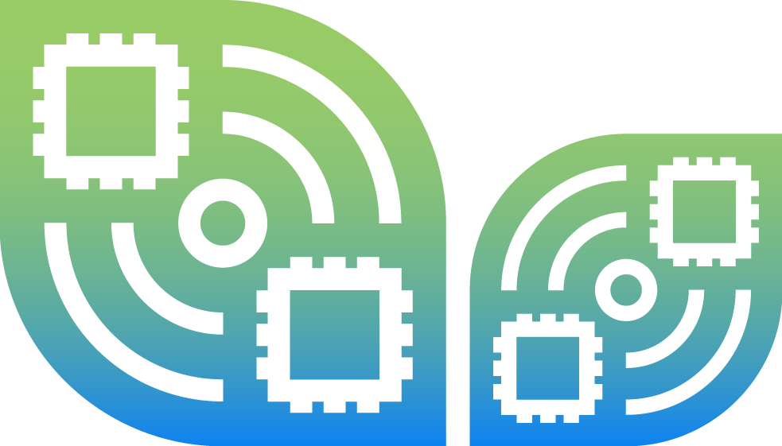

<ion-header collapse="condense">
  <ion-toolbar>
    <div class="d-flex align-items-center">
      
      <ion-title size="large">DigitalGrow</ion-title>
    </div>


  </ion-toolbar>
</ion-header>
<ion-content [fullscreen]="true">
  <app-explore-container name="Tab 1 page"></app-explore-container>
</ion-content>